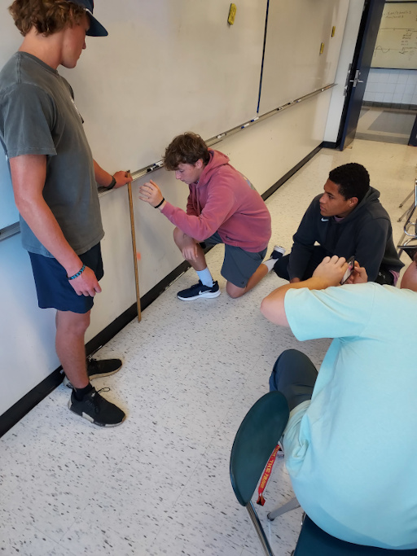

Data Projects
Data ProjectsBouncy Ball Bounce Height
Problem
Given a bouncy ball dropped at rest from a given height, how high will it bounce?
Resources
- Slides
- Handout
- Desmos
Overview
In groups, students complete the following stages:
- Experiment: Drop a bouncy ball from various heights up to 2 meters, and record the bounce height.
- Analysis: Plot the bounce height as a function of drop height. Notice and wonder.
- Modeling: Create a linear model that minimizes the sum of squared error.
- Model Validation: Use the model to make predictions and then test those predictions with new drops.
This lab can be used as an application of linear modeling, but it can also be used as an introduction to, or practice with:
- Basic experimental design
- Measurement
- Data splitting
- Model validation
- Stress-testing models
I used to ask students to write some sort of lab report at the end of this lab. Recently, I've started faciliating a reflective discussion once all of the models have been tested. This is a good time to reflect on the concept of domain of applicability. Our models are specific to a particular range of drop heights, with particular bouncy balls on particular surfaces. It is important to recognize that models have constraints on applicability.
Data
|
I ask students to collect as much data as they can in about 30 minutes.
Most have access to a slow-motion camera on their cell phone, which can improve accuracy.
They parse the videos into a table of bounce height \(h_{bounce}\) as a function of drop height \(h_{drop}\) and then create a plot in Desmos. There should be a strong linear relationship. |
 |
Data Splitting
If it is not overloading them, I ask students to split their data into training and testing sets before plotting, as a method of model validation. They use the training set to build their model, and only when they are confident in its predictive capabilities do they do a final assessment of their model on the testing set. This is a good way to detect over-fitting.

Training Set

Testing Set
The measure of how well our models fit their training data is much less important than the measure of how well those models fit new data they haven't yet seen.
Modeling
Modeling this data could be as simple as using Desmos to find a linear regression. I like to use this data to develop understanding of the concepts behind regression. Using our training data, we vary the slope and calculate the sum of squared errors (SSE). This creates an ideal parabala, the vertex of which corresponds to the optimal slope and minimized SSE of the best-fit line.


While the optimal slope can be found analytically, we vary the slope and check the SSE, which always turns into a fun race to see which student can find the smaller SSE!
Model Validation
If we used data splitting, then we can validate our model on our testing set. In any case, we can use our model to make predictions for new drop heights and then measure how close our predictions are to the true bounce height. I ask students to make interpolated predictions, as well as an extreme extrapolated prediction where we drop the balls from about 6 meters high. This extreme prediction is always off in a certain direction, and we reflect on the domain of applicability of our models.